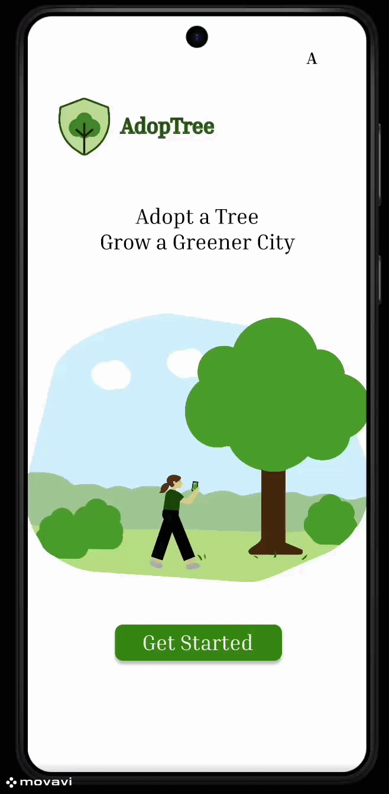

AdopTree
A high-fidelity mobile app prototype designed to make urban tree care more accessible and engaging
through tree adoption, user motivation and a structured digital experience.

Type
Individual project
Tools
Figma, Miro
Focus
UX/UI, user flow, prototyping
About the project
AdopTree was developed as a high-fidelity mobile prototype exploring how a digital product can support
environmental engagement through tree adoption and guided interaction. The concept focuses on helping users
adopt nearby trees, monitor their condition and stay motivated through a simple and accessible mobile experience.
My contribution
- Full concept development and product structure
- User journey and flow design
- Interface and visual design
- High-fidelity prototyping in Figma
- Translation of research into interaction decisions
Highlights
Main screen
Main screen introducing the concept and guiding users into the adoption flow.
About the concept
Explains the purpose of the product and how users can contribute to urban tree care.
Tree map
Location-based overview of nearby trees with different statuses and adoption opportunities.
My Trees
Personal overview of adopted trees and their current health or care status.
Check-in flow
Prototype for uploading a photo and checking in on the condition of an adopted tree.
AI health feedback
Conceptual result screen showing diagnosis and recommendations based on tree check-ins.